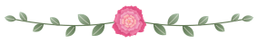

Balades, panoramas, villages et lacs : nos idées pour prolonger la fête au cœur des Bauges.
Bienvenue
Autour de Saint-Offenge et d’Héry-sur-Alby
Pour prolonger la fête et vous faire découvrir notre belle région, nous vous proposons quelques idées de balades, de visites et d’activités autour de Saint-Offenge et d’Héry-sur-Alby.
Situés entre Annecy, Aix-les-Bains et Chambéry, ces deux villages se trouvent au cœur du massif des Bauges, un territoire préservé partagé entre la Savoie et la Haute-Savoie. Le Parc naturel régional du massif des Bauges est également reconnu comme Géoparc mondial de l’UNESCO.
Géoparc mondial UNESCO
Nos coups de cœur
Balades, villages & lacs

Balades & panoramas
Le massif des Bauges
Le massif des Bauges offre de nombreuses possibilités de promenades et de randonnées, entre forêts, alpages, sommets et petits villages de montagne. Les paysages sont particulièrement agréables à découvrir à pied, à vélo ou simplement au détour d’une route panoramique.
À proximité d’Annecy, le Semnoz est un magnifique belvédère naturel. Depuis le Crêt de Châtillon, son point culminant à 1 702 mètres, on peut profiter de panoramas exceptionnels sur le lac d’Annecy, le lac du Bourget et les massifs environnants.
Le col de Leschaux est une jolie route de montagne qui traverse les Bauges. C’est un lieu apprécié des cyclistes et un point de départ pour plusieurs promenades offrant de beaux points de vue sur les paysages savoyards.
Sur les hauteurs du lac du Bourget, le belvédère de la Chambotte offre une vue spectaculaire sur le lac et les montagnes environnantes. C’est un endroit idéal pour une pause photo ou une balade tranquille.
Les gorges du Chéran permettent de découvrir une rivière préservée au cœur d’un paysage naturel impressionnant. Le Pont de l’Abîme, suspendu au-dessus des gorges, offre un point de vue remarquable sur la vallée.
Située dans le massif des Bauges, la cascade du Pissieu est un agréable lieu de promenade, particulièrement apprécié lors des belles journées. Elle permet de découvrir un environnement naturel et rafraîchissant.
Héry-sur-Alby est un village de Haute-Savoie situé dans le Pays d’Alby, à proximité de la vallée du Chéran. Depuis le village, on peut profiter de jolies vues sur les collines de l’Albanais. Il se trouve également à moins de 20 kilomètres d’Annecy.
C’est un point de départ agréable pour découvrir les villages et les paysages situés entre Annecy et le massif des Bauges.
Saint-Offenge est un village savoyard situé au cœur du massif des Bauges. Il constitue une belle étape pour découvrir l’ambiance des villages de montagne, les paysages ruraux et les spécialités locales.
Le village est notamment attaché à la tradition de l’Emmental de Savoie, qui fait l’objet d’une fête locale organisée depuis plusieurs décennies.
À quelques kilomètres d’Héry-sur-Alby, Alby-sur-Chéran est un joli village médiéval à découvrir à pied. Ses ruelles anciennes, ses maisons traditionnelles et son patrimoine en font une agréable promenade.
Surnommée la « Venise des Alpes », Annecy séduit par sa vieille ville, ses canaux, ses rues fleuries et ses façades colorées. Parmi les incontournables : le Palais de l’Île, le château d’Annecy, le Pont des Amours et les quais du Thiou.
Située au bord du lac du Bourget, Aix-les-Bains est idéale pour une journée entre patrimoine, promenade et détente. Les visiteurs pourront découvrir le centre-ville, les anciens thermes, les rives du lac et les nombreuses activités proposées autour de l’eau.
Installée au bord du lac du Bourget, l’abbaye d’Hautecombe est un site historique remarquable. Son cadre paisible et son architecture en font une visite incontournable pour les amateurs de patrimoine.
À proximité du lac du Bourget, Chanaz est un charmant village à découvrir au fil de ses ruelles et de ses canaux. Son cadre paisible lui vaut parfois le surnom de « petite Venise savoyarde ».
Le lac d’Annecy offre de nombreuses activités : baignade, paddle, pédalo, bateau, croisière ou simplement promenade au bord de l’eau. Les plus sportifs pourront également parcourir les pistes cyclables aménagées autour du lac.
Le col de la Forclaz, situé sur les hauteurs, est l’un des meilleurs points de vue sur le lac d’Annecy. Il est également réputé pour la pratique du parapente.
Le lac du Bourget est le plus grand lac naturel de France. Ses plages, ses ports et ses villages offrent de nombreuses possibilités de baignade, de promenade et d’activités nautiques.
Depuis Aix-les-Bains, il est possible de profiter du lac en bateau, en paddle, en canoë ou tout simplement lors d’une balade au bord de l’eau.